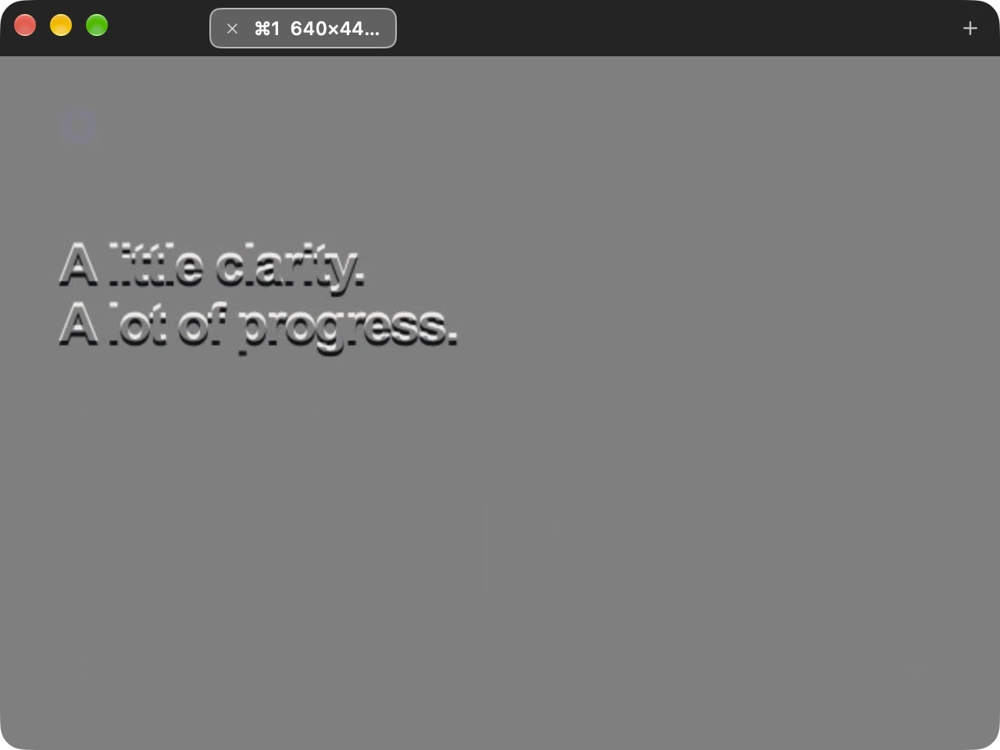

TRACE / WORKFLOW GUIDE
How to check UI spacing and alignment on Mac
Compare a design screenshot with your website or app to inspect margins, padding, and positioning.
Start with a matching viewport
Open your implementation at the width used in the reference. For a website, check the browser viewport rather than the outer window size. A narrower viewport can change text wrapping and move every element below a heading, even when the implementation uses the intended spacing.
Keep browser zoom consistent while comparing. In Trace, use ⌘0 for Actual Size. This restores the reference’s logical size; it does not work out the intended frame width or correct an export made at a different scale.
Bring the reference into Trace
Copy the design as an image and press ⌘V in Trace. You can also position Trace over a visible reference and press ⌘G to capture the area beneath its image viewport. Trace excludes its own windows from this capture.
Capturing requires macOS Screen Recording permission. If capture is unavailable, check the permission instructions or paste an image from the clipboard.
Align one stable anchor
Drag the reference over your build and line up a clear anchor, such as a content container’s left edge or the top corner of a card. Use the arrow keys to nudge by one macOS coordinate point, or Shift plus an arrow to move by ten points. Hold Command too if you enabled that movement preference.
Check a second anchor before judging individual gaps. If the left edges align but the right edges drift apart, revisit the viewport width or reference scale. Moving the whole overlay cannot fix a scale mismatch.
Use inversion to inspect the edges
Enable inversion with ⌘I and 50% image translucence with ⌘L. Set window opacity to 100% in Preferences. Under these settings, matching content blends to neutral gray, while displaced edges remain visible.

Trace shows the visual comparison. It does not automatically detect errors, measure CSS values, or generate a difference report.
Review layout before fine detail
- Container alignment: compare the main content edges and shared alignment between sections.
- Margins and gaps: inspect the distance between cards, headings, buttons, and adjacent sections.
- Padding: compare the position of text and controls inside their containers.
- Text wrapping: check font choice, size, weight, and available width before treating a line break as a spacing problem.
- Repeated elements: use several cards or rows to check whether an offset is isolated or repeated.
Investigate differences in the implementation’s own tools. An overlay helps identify where to look; a browser inspector or your app’s layout tools help determine which property needs changing.
Account for rendering differences
If nearly everything appears doubled, check position and scale first. If only text edges differ, font rendering or a different font may be involved. Shadows, image compression, and color settings can also make pixels differ without indicating a layout error.
Do not shift the overlay to make each component match independently. Once the reference is aligned, keep its position stable while reviewing the rest of the layout.
Refine and compare again
Lock the overlay with ⌃⌘L to click through it and work in the implementation underneath. Activate Trace again to unlock it. Keep another reference in a tab when reviewing a different screen or viewport.
References and undo history last for the current session. Copy an image out if you need to keep it. The complete Trace keyboard reference covers the capture, movement, and comparison controls.
Check your next build against the design.
Trace is free on the Mac App Store.